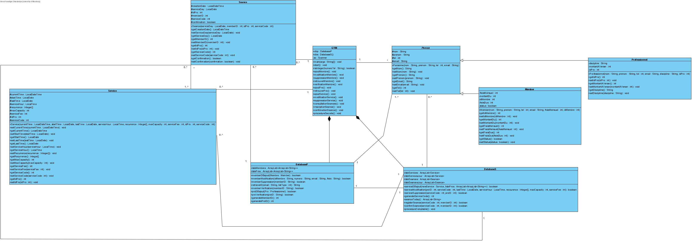
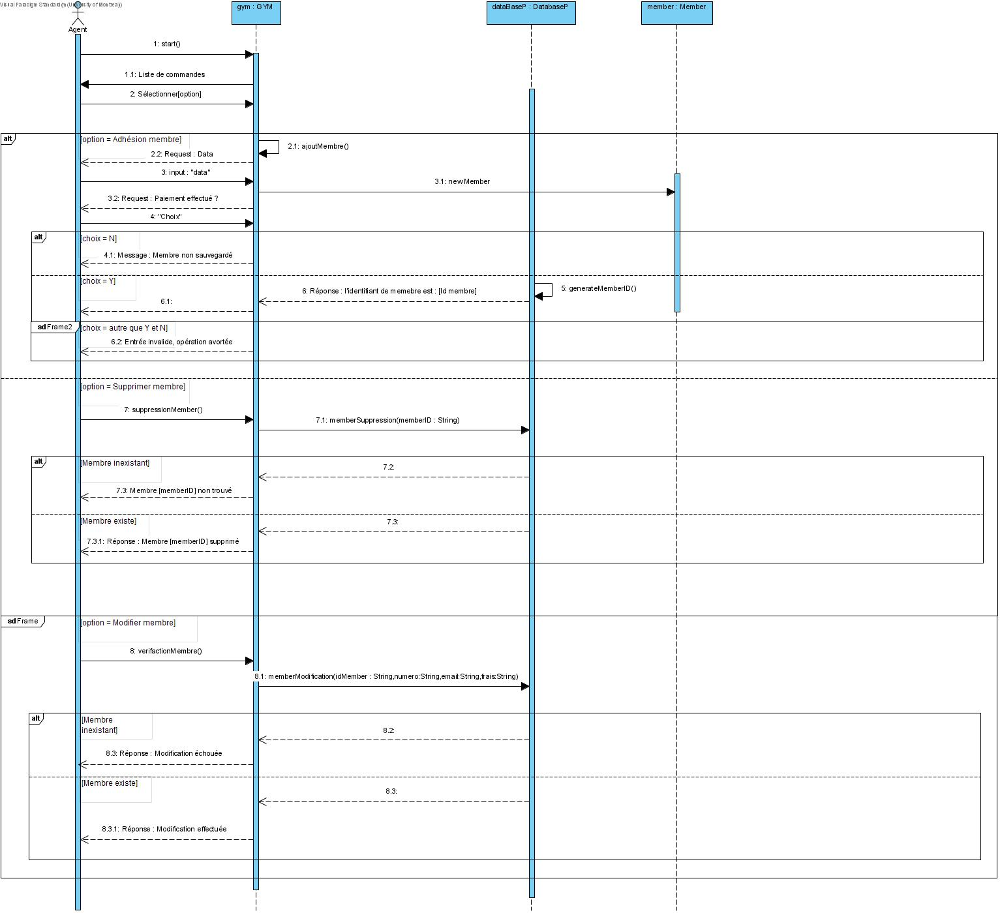
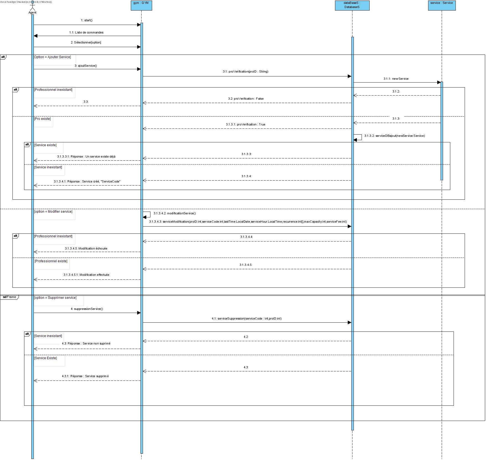
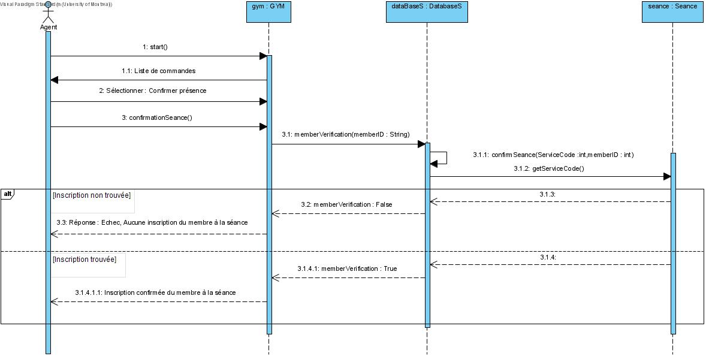
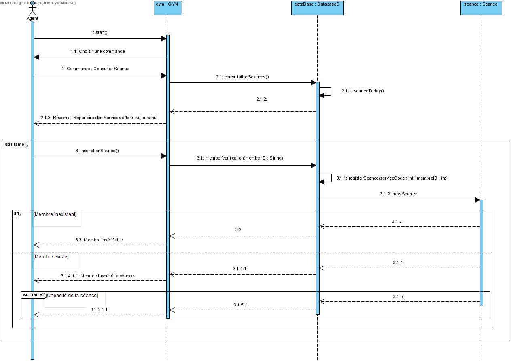

Nom: Ming-Xia Delvas
Matricule: 4038
Courriel: ming-xia.delvas@umontreal.ca
temps mis: 70 heures
Nom: Simo Hakim
Matricule: 6040
Courriel: simo.hakim@umontreal.ca
temps mis: 80 heures
Soumetteur: Ming-Xia Delvas
| Tâche | Ming-Xia | Simo |
|---|---|---|
| Tâche 1 : Mise à jour de vos artéfacts | 90% | 10% |
| Tâche 2 : Code source Java du programme et cohérence entre la conception et l'implémentation | 20% | 80% |
| Tâche 3 : Tests unitaires en JUnit | 50% | 50% |
| Tâche 4 : Manuel utilisateur | 30% | 70% |
| Tâche 5 : JavaDocs générés | 40% | 60% |
Voici le lien vers le glossaire.
Code QR : Représente le numéro du membre qui est affiché sur l'écran de l'appareil mobile. Lecteur de code QR : Lecteur qui scan le code QR et donne accès au GYM lorsque le code est valide. Liste des services : Liste des services qui ont été offert au membre. Facture : Facture de la liste des services dont le membre a participer au cours de la semaine. Rapports de membre/professionnel : Chaque rapport doit contenir son nom, la date du rapport.
Cas d'utilisation : Adhésion d'un membre.
But : Création d’un dossier d'un membre de #GYM
Préconditions : Le membre n'est pas inscrit à #GYM et désire s'inscrire.
Acteurs : L'agent(acteur principal) et le membre(acteur secondaire).
Scénario principal :
1. Le membre arrive à la réception du centre pour créer son compte #GYM.
2. L’agent lui demande des informations personnelles ainsi que son compte Facebook valide (courriel) et ce qu'il veut faire.
3. L’agent entre les informations du membre dans le système avec la requête.
4. Appelle de vérification du status d'un membre.
5. Le membre paie ses frais d'adhésion.
6. La transaction a été acceptée.
7. Le système assigne au nouveau membre un numéro unique de membre (mID).
Scénarios alternatifs :
4a. Le système détecte que le status du membre ne permet pas la modification demandée.
4a.1. Un message affiche sur l'écran que le client avait déjà un compte chez #GYM.
4a.2. L’agent annule la requête et indique le problème au membre.
6a. La transaction a été refusée.
6a.1. Le système n'assigne pas un nouveau numéro unique de membre.
Postconditions : Retour à l'écran d' d'accueil.
Cas d'utilisation : Confirmer une séance
But : Autoriser l'accès d'un membre à une séance ou service a laquelle il s'est inscrit précédemment.
Préconditions : Le membre doit déjà être inscrit à l'activité et avoir a portée de main son numéro unique de membre (mID) et le code de service de la séance (sID).
Acteurs : L'agent(acteur principal) et le membre(acteur secondaire).
Scénario principal :
1. Le membre arrive à la réception pour confirmer sa présence à une activité et y accéder, Il donne son code de service de la séance (sID).
2. L’agent affiche le répertoire de services et recherche la séance correspondante au code de service.
3. L'agent sélectionne la séance correspondante et rentre le numéro unique du membre (mID) dans la case "Confirmer l'inscription"
4. Le système confirme que le membre est inscrit.
5. L'agent autorise l'accès au membre à l'activité.
Scénarios alternatifs :
1a. Le membre confirme sa présence à l'aide du lecteur de code QR près des tourniquets.
1a.1. Le membre a accès au GYM.
3a. L'agent ne trouve pas de séance correspondant au code de service (sID) fourni
3a.1. L'agent demande au membre de vérifier le répertoire de services afin de s'assurer qu'il ne s'est pas trompé de séance.
3a.2. Procédure pour vérifier le Répertoire des services commence.
4a. Le numéro unique de membre (mID) du membre est invalide, inexistant ou suspendu.
4a.1. L’agent dit au membre que soit il n'a pas de compte, soit le numéro unique de membre (mID) qu'il a communiqué est invalide ou soit il n'a pas payé ses frais.
4a.2. Procédure pour retrouver le numéro unique de membre (mID) commence.
4b. Le membre n'est pas inscrit.
4b.1. L'agent dit au membre qu'il ne s'est pas inscrit au cours et qu'il doit procéder à l'inscription d'abord puis la confirmer.
4b.2. Procédure d'inscription à l'activité commence.
Postconditions : Retour à l'écran d'accueil.
Cas d'utilisation : Adhésion d'un professionnel.
But : Création d’un dossier pour un nouveau professionnel désirant exercer au #GYM.
Préconditions : Le professionnel n'est pas déjà inscrit à #GYM.
Acteurs : L'agent(acteur principal) et le professionnel(acteur secondaire).
Scénario principal :
1. Le professionnel arrive à la réception du centre pour s’inscrire au #GYM.
2. L’agent lui demande des informations professionnelles ainsi que son compte Facebook valide (courriel) pour la création du nouveau dossier.
3. L’agent rentre les informations du nouveau professionnel dans le système.
4. Le système enregistre les nouvelles données et s'assure qu'il ne s'agit pas d'un doublon.
5. Création d’un profil professionnel.
6. Le système assigne au nouveau professionnel un numéro pro unique(pID).
7. Le nouveau professionnel peut désormais commencer à créer des séances de service.
Scénarios alternatifs :
4a. Le système détecte un doublon et affiche un message d’erreur lors de la création du dossier.
4a.1. L’agent annule le dossier et indique au professionnel qu'il est déjà inscrit.
4a.2. Procédure pour retrouver le numéro pro unique (pID) commence.
Postconditions : Retour à l'écran d'accueil.
Risque 4 : Un professionnel donne un cours pour lequel il n'a pas les compétences.
Solution : Demander un minimum de 2 ans d'expérience au domaine spécifique pour donner le cours.
Contrainte sur le temps de réponse : Le système doit assigner un identifiant (mID, sID, pID) en deux secondes pour la création d'une entrée dans la base de données.
Contrainte sur le temps de réponse : Le système doit prendre une seconde pour vérifier la validité d'un identifiant (mID, sID, pID)
Contrainte sur la disponibilité : Le système doit continuer de fonctionner et d'enregistrer les nouvelles données même si plusieurs personnes
utilisent le logiciel en même temps.
Contrainte sur l'utilisabilité : Le système doit être simple afin que tout le monde sache l'utiliser.
Contrainte sur l'adaptabilité : Il est possible de choisir entre le français ou l'anglais. Ainsi, les gens ne parlant pas français
pourront choisir les instruction en anglais et vice-versa.
Quelles parties seront informatisées et comment ?
Les parties informatisées seront une base de donnée contenant un fichier registre de : Membres, Professionnels, Services & Inscriptions et le logiciel interagissant avec.
- Où seront stockées les données ?
Dans la base de données avec laquelle le logiciel interagira, peut être stockée en local ou sur le réseau.
Quel matériel sera nécessaire ?
Un serveur qui va hoster la base de données, un ordinateur qui va servir de terminal à l'agent afin d'effectuer des actions avec la base de données.
Le serveur peut aussi être la machine servant de terminal.
Comment le système #GYM que vous développez interagira avec les autres systèmes ?
Le système GYM s'exécute sur le terminal de l'employé et fonctionne en accédant et modifiant les données stockées sur la base de données.
Comment les utilisateurs interagiront avec le système ?
L'employé peut écrire des commandes afin d'effectuer les actions décrites dans les cas d'utilisation
Exemple de fonctions :
Créer, Vérifier ou retrouver l'identifiant de membre/professionnel
Créer un service, vérifier le code du service
Inscrire ou confirmer l'inscription à une séance
Vérifier la capacité
Retourner la liste des inscriptions à un service
Retourner un registre des services




